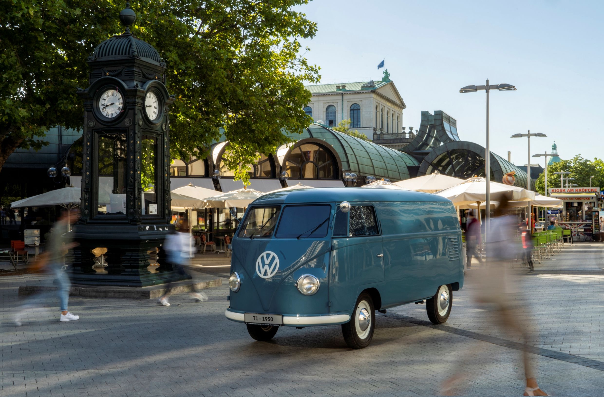
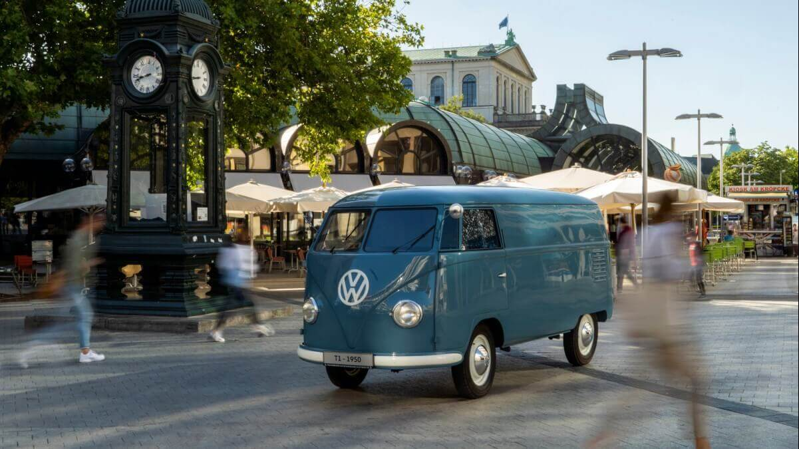
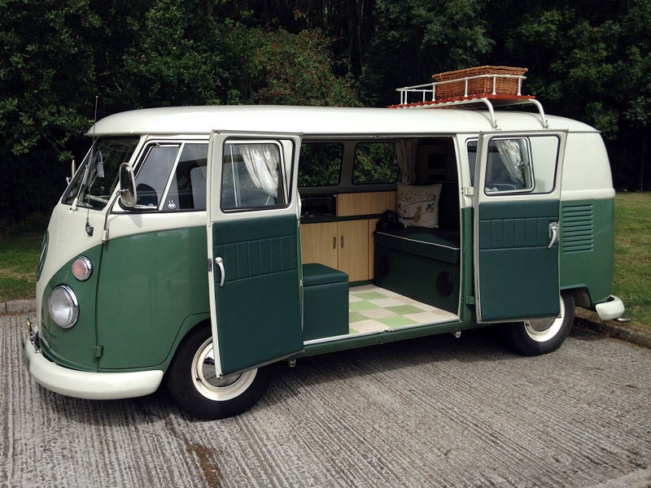
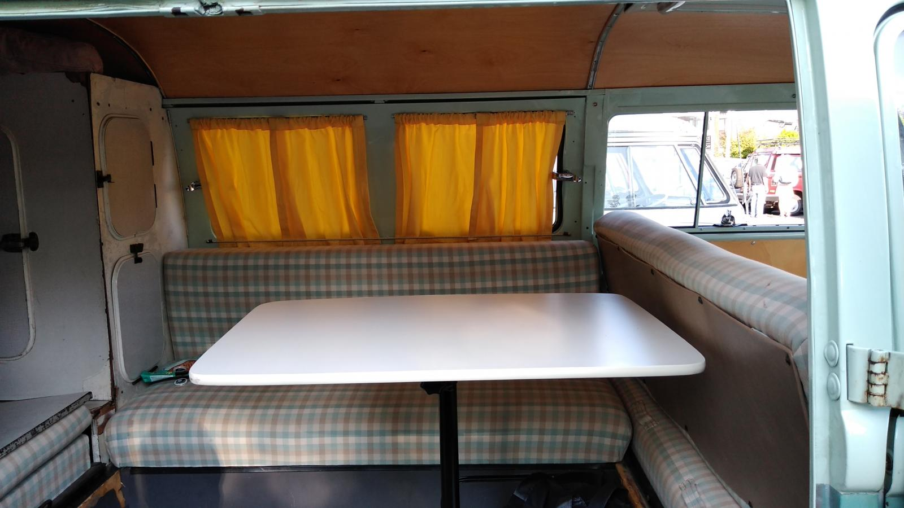

The sketch
Dutch importer Ben Pon draws the seed of a Beetle-based transporter: maximum carrying space on a compact footprint.
The Volkswagen van began as a box for the working day. Its honest shape became a camper, a protest vehicle, a rolling canvas—and one of the few machines to belong equally to tradespeople and dreamers.
Ride through the story
Ben Pon’s 1947 sketch imagined a compact transporter built around Volkswagen mechanics. Production began in 1950. The trick was not luxury or speed: it was useful volume. With the driver over the front wheels and the engine at the rear, the space between could become almost anything.
The body stayed simple; the meaning changed with whoever held the keys. Select an era to see how the same platform crossed from commerce into culture.

The earliest Type 2 was all business: panel van, Kombi, minibus and pickup. Flat sides carried names and signs; the cabin-forward layout kept a large cargo bay inside a small footprint.


Dutch importer Ben Pon draws the seed of a Beetle-based transporter: maximum carrying space on a compact footprint.
The first production Transporter leaves Wolfsburg. Panel van first; passenger and pickup variants follow quickly.
Westfalia camper conversions reach the U.S., formalizing what owners were already doing—turning the bus into a portable life.
Affordable space, an unconventional silhouette and easy customization make the Microbus a natural fit for musicians, organizers, travelers and the counterculture.
The second generation trades the split windshield for a broad curved pane, better visibility and a more capable platform—without losing the friendly face.
Restorers, campers, collectors and artists still read the same simple body as an invitation: work with it, sleep in it, paint it, go.
It didn’t stop being useful when it became a hippie icon. Its usefulness is what made the freedom possible.